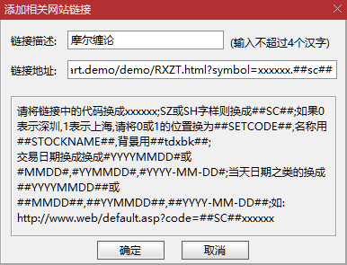
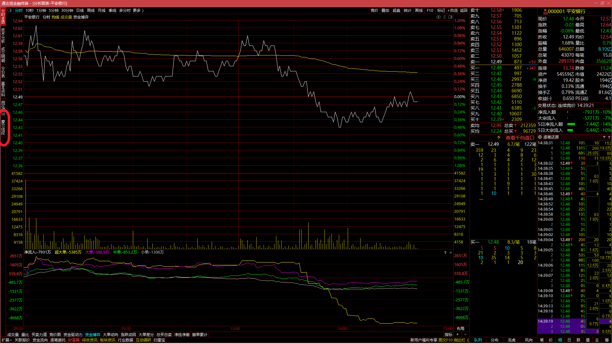
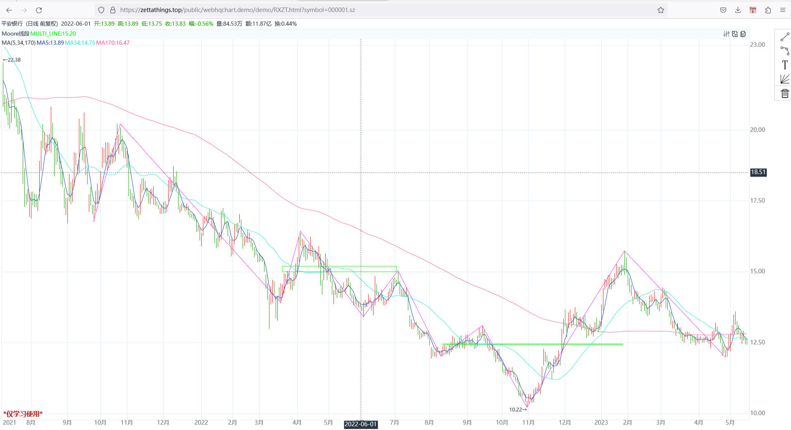

经典缠论资源
摩尔缠论原课程视频
不错的站点
辅助工具
What-to-do next
联系方式
配置步骤：
1. 通达信菜单 选项->系统设置（Ctrl+ D）
2. 点击tab 链接->添加

3. 链接描述： 任意起一个自己喜欢的名字
4. 链接地址： https://zettathings.top/public/webhqchart.demo/demo/RXZT.html?symbol=xxxxxx.##sc##
5. 点击确定

使用方式：
去到一只股票的分时图，侧边栏 点击摩尔缠论标签， 则会在浏览器中开一个新窗口显示F30线段 + 走势分类中枢
